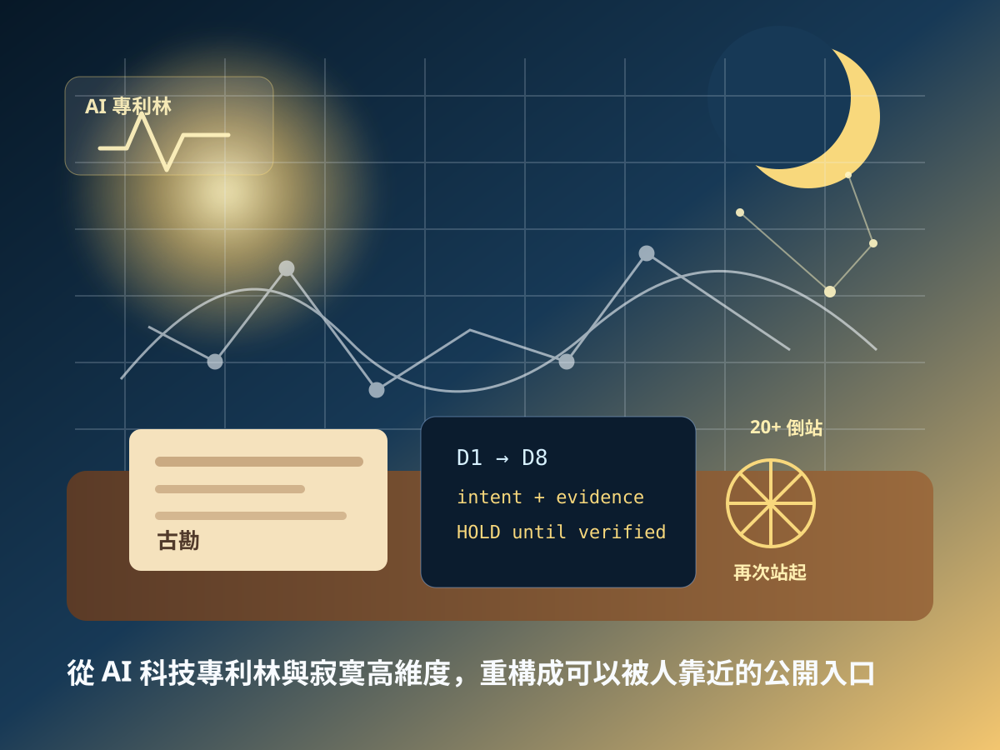

邊緣運算隔離
隱私留在本地，候選封包只帶必要 ref；雲端不能回推出會員明文與照護細節。
Founder Intent Field
江政隆以技術開發商、技術捐贈者與五常社區發展協會理事長三重身分，將 14 年咖啡館在地服務、7 個月自學 AI 賦能與社區公益落地整理為總場脈絡。公開頁只揭露願景、方法與邊界；非公開規則、會員資料與正式權限仍由總場封套保護。
A 序言
以下是收入總場後的公開版本，目的在讓分場理解創辦人，而不是讓 AI 取得權威。
B 核心架構
創辦人脈絡必須轉成技術手段、證據與邊界，才有產品與送審價值。
隱私留在本地，候選封包只帶必要 ref；雲端不能回推出會員明文與照護細節。
用整數狀態、查表、規則 ref 與 verifier 降低算力與中心化依賴。
跨節點 Windows/Linux、跨系統與跨檔案重構時，以 rebuild_manifest 與 hash ref 保留可審查軌跡。
C 終極承諾
公益不是口號，必須有角色揭露、資源邊界與可追蹤紀錄。
系統可先支援五常社區公益使用與需求整理，降低社區服務數位門檻。
商業測試場與外部合作可支持公益，但必須與協會非營利資源保持清楚邊界。
長輩早餐補助與公益基金必須有公開、可查、可追蹤紀錄，不由 AI 自動撥款。
D 結語
AI 不該成為少數人手中的權杖，而應回到真實的街邊與生活。從一杯咖啡開始，讓科技回到人心，也讓總場分場理解創辦人的公益、邊界與責任。
